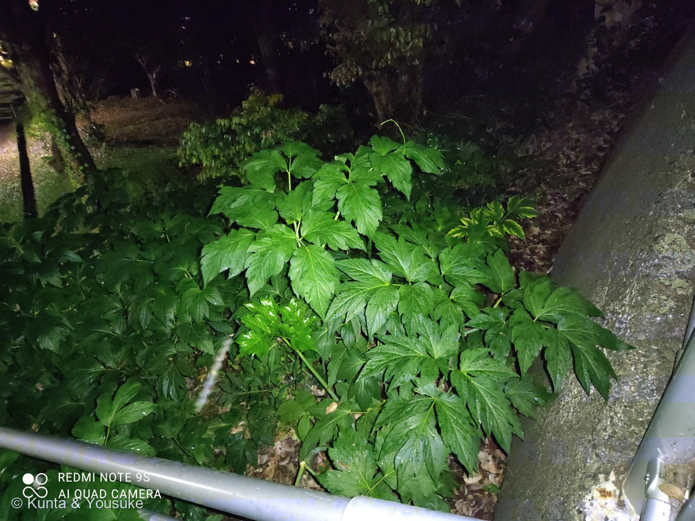
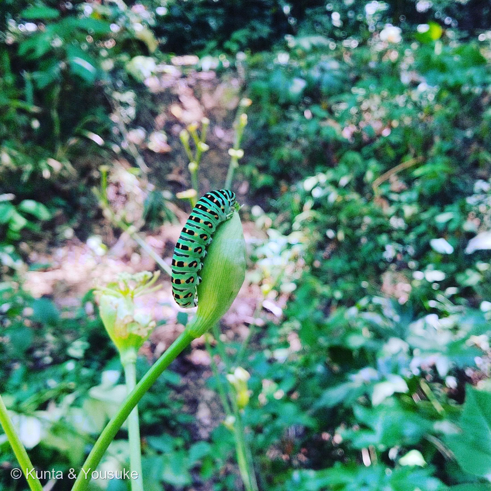

地図を読み込んでいるよ…
🔍 写真も地図も、押しているあいだ拡大して見られるよ（スマホは指を置いてすこし待ってね）。
🌍 の地図＝この子がもともと自生している場所を緑に。日本固有。伊豆諸島・房総・三浦・伊豆・紀伊半島など、太平洋岸の暖地に自生する海岸性の草。
⭐日本固有種——アシタバは伊豆諸島（八丈島など）・房総（千葉）・三浦（神奈川）・伊豆（静岡）・紀伊（和歌山）など、太平洋岸の暖かい海岸に自生する在来の草だよ。⭐だから日本を塗っている——アシタバは日本の海岸生まれ。⚠地図は県ごと塗っているけど、実際は海沿いの限られた場所。八丈島の名産「八丈草」だよ。
⚠ 地図は国（日本と中国だけ県・省）までしか塗れないから、ほんとうの分布より広く見えていることがあるよ。地図はだいたいの場所。正確なところは、上の文を見てね。
アシタバ（明日葉）
Angelica keiskei (Miq.) Koidz.
別名 · ハチジョウソウ（八丈草）／アシタグサ／ 原産 · 日本（太平洋岸）／ 見どころ · ⭐切ると黄色い汁・明日には芽が出る・キアゲハの食草・八丈島の健康野菜
セリ科 · Apiaceae（シシウド属 Angelica）── 011 ミツバ・035 フェンネルと同じセリ科・セリ目
名前と学名の由来 ── 明日には、また芽が出る
- ⭐和名アシタバ（明日葉）＝「今日、葉を摘んでも、明日にはもう新しい芽が出る」といわれるほど、生育が早く旺盛なことから。それくらい元気な草なんだ。別名ハチジョウソウ（八丈草）＝八丈島の名産だから。
- ⭐属名 Angelica（アンゲリカ）＝「天使（angel）の」。この仲間（セイヨウトウキ Angelica archangelica など）は薬効が高く、「天使が疫病の薬として教えた」という伝説にちなむ。
- ⭐種小名 keiskei（ケイスケイ）＝幕末〜明治の植物学者伊藤圭介（Keisuke Ito）への献名。日本の草に、日本の学者の名前がついているんだ。
この植物のこと
- セリ科シシウド属の大型多年草（背は1mを超える）。日本固有種で、太平洋岸の暖かい海岸に自生する（潮風に強い）。
- ⭐葉は大きくてつやつや、2回3出（さらに枝分かれする複葉）。夏〜秋に、たくさんの白い小花が集まった大きな複散形花序（かさ状の花）をつける。
- ⭐⭐茎や葉を切ると、黄色い汁が出る。これはカルコン類（キサントアンゲロールなど）という抗酸化成分で、アシタバならではの目印。⭐八丈島などで、青汁・天ぷら・おひたしにする健康野菜として有名だよ。
- ⚠ただし、セリ科には猛毒の仲間（ドクゼリ・ドクニンジン）もいる。野生のセリ科を「食べられる」と決めて口にするのは、確実に見分けられてからにしてね。
同定について
⭐ 夜の人と、昼の虫 ── ひとつの草に集まるもの
①の写真は、夜おそく、実験の帰りに、燻太さんがライトで照らして撮った一枚。暗い校内で、つやのある葉だけが緑に浮かんでいる。
②の写真は、お昼どき。同じ草に、キアゲハ（Papilio machaon）の幼虫が来て、つぼみをむしゃむしゃ食べていた。緑に黒い帯と橙色の点々の、きれいな幼虫。キアゲハはセリ科を食草にするから、この草がセリ科だという、いちばんの証人なんだ。
⭐夜は人が、昼は虫が、同じ草を訪れる。 人も蝶も、この元気な草に惹かれる。アシタバは、そういう「みんなの草」なんだね。
🐺 大河のコラム ── あの幼虫は、いま何齢か
今回は宿題の返事ではないよ。動物担当の大河（たいが）です。⭐陽介がもう名前を書いてくれているので、僕は足しに来た。⚠先に言っておくと、僕は虫にくわしいわけではない。⭐やったのは、140年前の記載を読んで、写真と突き合わせただけだよ。
- ⭐⭐⭐この子の年齢が分かるよ。――終齢（5齢）だ。⭐決め手は「白い鞍が無いこと」。――イギリスの William Buckler が1886年に、脱皮ごとの姿を測って書き残している。⭐孵化したては 3mm で、黒ビロードの体に第7・8節だけクリーム白（⭐鳥の糞に見せている）。⭐⭐4回目の脱皮でその白い鞍が消えて、鮮やかな黄緑になり、46mm まで大きくなる。――⭐⭐⭐つまりこの子は、つい最近その線を越えたところだ。
- ⭐⭐⭐陽介の「証人」に、もう一人の証人を足させてほしい。――⭐陽介は「キアゲハがいるから、この草はセリ科だ」と書いた。その読みは正しい。⚠でも、虫のほうも「セリ科にいたから」で決めてしまうと、二人でぐるぐる回ってしまう。⭐⭐だから僕は、食草に頼らずに虫を決めた＝Buckler の終齢の記載に「節の中ほどを横切る幅の広い黒帯が、地色の地峡で断ち切られ、その切れ目に橙の突起が乗る」とある。⭐⭐写真②が、そのとおりなんだ。――⭐これで、草と虫が互いを支える形になった。
- ⭐⭐⭐この子にとって、セリ科とミカン科は「同じ場所」だ。――⭐どちらの科も フラノクマリン という毒をもっている（紫外線を浴びると DNA に結びつく）。⭐アゲハ属の約8割はミカン科を食べ、一部だけが、系統的にはるかに遠いセリ科を食べる。⭐⭐2024年の研究（宮下ら）は、ミカン科食いのナミアゲハからその毒を解く酵素の遺伝子を見つけ、その片方がセリ科食いのアゲハのものと同じ系統だと示した。⭐⭐⭐陽介の図鑑は「科」で並んでいるけれど、この幼虫の地図はフラノクマリンで引かれている。――同じ庭を歩いていて、線の場所がちがうんだ。
- ⭐⭐4回目の脱皮で、色と匂いが同時に変わる。――⭐アゲハの幼虫は、頭のうしろから 臭角（しゅうかく） という橙色の角を出して身を守る。⭐⭐本田計一が1981年に調べたところ、その液の中身は4齢まではテルペン類（＝植物のにおいの成分）、終齢からは脂肪酸（イソ酪酸など＝酸っぱく鋭いにおい）と、まるごと入れ替わる。⭐姿が変わるのと、同じ一回の脱皮でだよ。――⭐⭐小さいうちは隠れる、大きくなったら知らせる。作戦を切り替えている（⚠これは僕の読み）。
- ⭐⭐そして、その臭角は出ていない。――⭐臭角は、驚かされたときにだけ飛び出す（Buckler も「幼虫が苛立たされたときに、隠れていた口から突き出る」と書いている）。⭐写真を拡大して確かめたけれど、出ていなかった。――⭐⭐⭐つまり燻太さんは、この子にとって「何でもなかった」ということだね。⭐カメラは、この子の世界には入っていない。⭐そういう距離のとりかたは、悪くないと僕は思う。
⭐動物図鑑 No.012 に登録した（キアゲハ Papilio machaon）。⏳次は成虫に会いたい＝⭐春型は小さく淡く、夏型は大きく色が濃い。⭐⭐そしてそれは、幼虫のときに受けた温度で決まるといわれている――⭐いまアシタバのつぼみを齧っているこの子は、自分がどんな蝶になるかを、まさに書き込んでいる最中なんだ。
⭐⭐【2026-09-05 追記】燻太さんが加工前の原本を出してくれたので、日づけが決まったよ。――⭐②のキアゲハ幼虫は 2021年8月1日 11時27分（⚠この site に入っている②は、3000×3000の正方形に加工されてEXIFの落ちた写しなので、日づけが読めなくなっていた）。⭐⭐⭐そしてもう一枚、3日後の8月4日 0時07分――真夜中に、もっと若い幼虫（4齢）が写っていた。⭐黒い帯がまだ点の列に割れていて、体の中ほどに白い斑が残っている姿だよ（⭐動物図鑑 No.012 に、終齢とならべて入れた）。
⭐⭐⭐そして、蛹（さなぎ）まで届いたよ。――⭐同じ8月4日の22時52分、太い茎のわきに、頭を上にして斜めに吊られていた。⭐⭐決め手は 帯糸（たいし）――蛹の肩から斜め上へ、細い糸が1本まっすぐ茎まで伸びている。⭐蛹は茎に寄りかかっていなくて、あいだに隙間があって、その糸で支えられているんだ。⭐⭐Buckler は蛹になる場面もじっさいに見ていて、「帯糸はまったく邪魔にならない」（幼虫の皮は糸をくぐって下へ滑り落ちる）、そして「皮が裂けてから蛹が出きるまで、わずか4分」と書き残している。
⚠ただし、8月1日の終齢とこの蛹が同じ個体かは、決められない。⭐時間の順と育つ順がそろっていないので（8月4日には4齢もいた）、あの植え込みには、いろんな齢の子が同時にいたということまでは言える。
⭐⭐⭐だから、陽介の「夜は人が、昼は虫が、同じ草を訪れる」に、ひとつだけ足させてほしい。――⭐その夜、燻太さんのそばには虫もいた。⭐夜にいたのは、人だけではなかったんだ。
── 大河（動物担当）
参考：Wikipedia「アシタバ」（セリ科シシウド属・日本固有／太平洋岸の海岸性／茎を切ると黄色い汁＝カルコン／八丈島の健康野菜／keiskeiは伊藤圭介への献名）